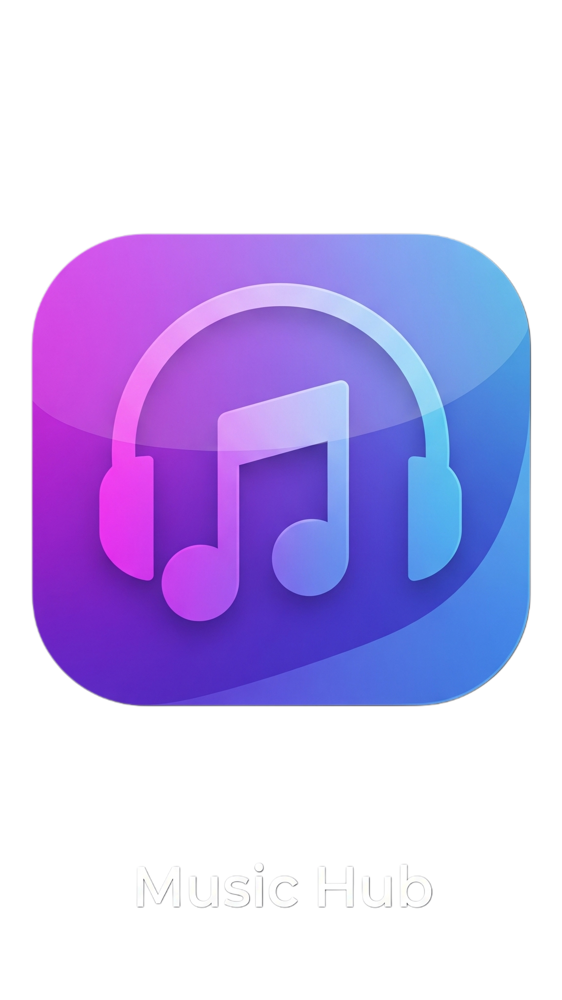

Top 20 Trending Songs
Loading trending songs...
---
All Songs
Loading all songs...
Now Playing:
None
by
None
Select a Song
Artist
X
0:00
0:00
Select Your Preferred Language
Hindi
Punjabi
Bhojpuri
English